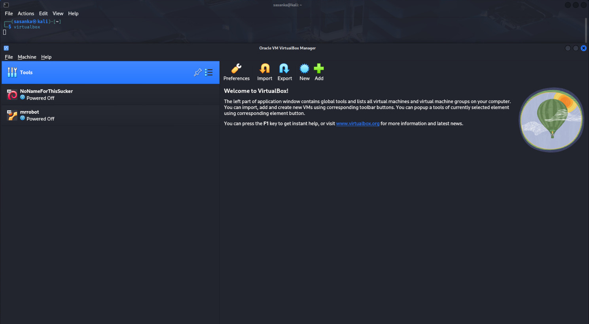

Showcasing my penetration testing and hacking labs setup and process
Start by downloading and installing VirtualBox from the official website. It’s a free virtualization software that allows you to run multiple virtual machines (VMs) on your system, which is essential for penetration testing and lab setups. You can download VirtualBox by following the steps provided on the official site:
Download Link: Download VirtualBox
Instructions for Kali Linux users: As a Kali Linux user, I installed VirtualBox using the following steps:
Before trying to install VirtualBox, ensure that your Kali Linux is up-to-date, the apt sources are properly set, and reboot the machine if required. Run the following commands:
This will update your system and reboot if necessary.
Now, install VirtualBox and the necessary dependencies by running the following commands:
This command installs VirtualBox and the required Linux headers for integration with the kernel.
If you need to use extra features in VirtualBox, such as USB device support, you can install the extension pack with this command:
This extension pack adds extra capabilities to VirtualBox, including USB support and VirtualBox RDP.
Explanation: VirtualBox acts as a platform to run Kali Linux, Mr. Robot, and other vulnerable machines that I plan to hack. The Linux headers are needed for VirtualBox to work seamlessly with Kali Linux's kernel, and the extension pack adds useful features for testing and exploitation tasks.
Installation Process: Follow these steps to ensure that VirtualBox is installed and fully set up on Kali Linux. Afterward, you can verify the installation by running the virtualbox command in the terminal to launch the application.
Screenshot: Below is an image of the VirtualBox interface.

Next, download Kali Linux and the Mr. Robot vulnerable machine from the following sources:
Explanation: Kali Linux is a powerful penetration testing distro that includes various tools to perform security testing. Mr. Robot is a vulnerable machine that is specifically designed for practicing ethical hacking techniques.
Note: If you download the Kali Linux image as a .7z archive, you'll need to extract it using the following command:
This will extract the Kali Linux image, which you can then import into VirtualBox.
Once the OVA files (like the Mr. Robot vulnerable machine) or Kali Linux VirtualBox distribution (such as kali-linux-2024.4-virtualbox-amd64.7z) are downloaded, follow these steps:
For Mr. Robot (OVA file): Simply double-click the downloaded OVA file, and VirtualBox will automatically open and navigate to the import screen. You can then rename the virtual machine and adjust the settings before importing.
For Kali Linux (7z file): If you've downloaded the Kali Linux distribution in a compressed .7z file, you first need to extract the contents:
kali-linux-2024.4-virtualbox-amd64.7z file using an extraction tool (like 7zip or tar on Linux):7z x kali-linux-2024.4-virtualbox-amd64.7z
kali-linux-2024.4-virtualbox-amd64.ova file, which you can now import into VirtualBox.After extraction, you can either double-click on the extracted kali-linux-2024.4-virtualbox-amd64.ova file, which will automatically start the import process in VirtualBox, or you can import it via the command line:
Replace path_to_kali_ova_file.ova with the actual path to the extracted OVA file.
For both Mr. Robot and Kali Linux: After importing the OVA file, you can rename the virtual machine and adjust the settings as needed before clicking "Import" to finalize the process.
To ensure that the hacking lab is isolated from your main network and does not affect other devices, configure the network settings in VirtualBox. This will allow communication between virtual machines (VMs) in the lab without connecting to the internet or your host machine.
Run the following commands to create an isolated internal network:
VM_NAME with the name of your virtual machine):
The VBoxManage modifyvm command configures the VM’s first network adapter to use an internal network named Network_Name. The DHCP server assigns IP addresses in the range 192.168.1.10-192.168.1.50, ensuring they can communicate without accessing your main network or the internet.
IP Address Ranges: Ensure you use private IP ranges for internal networks, as defined by RFC 1918. Common ranges include:
192.168.0.0 – 192.168.255.255 (Class C)172.16.0.0 – 172.31.255.255 (Class B)10.0.0.0 – 10.255.255.255 (Class A)Alternatively, you can isolate the network using VirtualBox’s GUI:
Network_Name (the same as in the command example).Note: Ensure all VMs in the hacking lab are connected to the same internal network (e.g., Network_Name) to enable communication between them while keeping them isolated from your host system and the internet.
After completing the basic setup and hacking the Mr. Robot machine, you can expand the hacking lab by adding new vulnerable machines from VulnHub or similar sources. This allows continuous practice on different exploitation techniques within the same isolated environment.
To add more virtual machines (VMs) to the same isolated internal network, use the following command for each new VM:
This command ensures that all VMs are on the same internal network (e.g., Network_Name), enabling communication between them for testing purposes.
Alternatively, you can use the VirtualBox GUI:
Network_Name).Once the Mr. Robot machine has been fully exploited, it can be removed or reset. You can then add and test new vulnerable machines to expand your knowledge and practice more complex hacking scenarios.
After setting up the hacking lab, I began penetration testing on the vulnerable machines. Below are the detailed steps for each hacked machine: